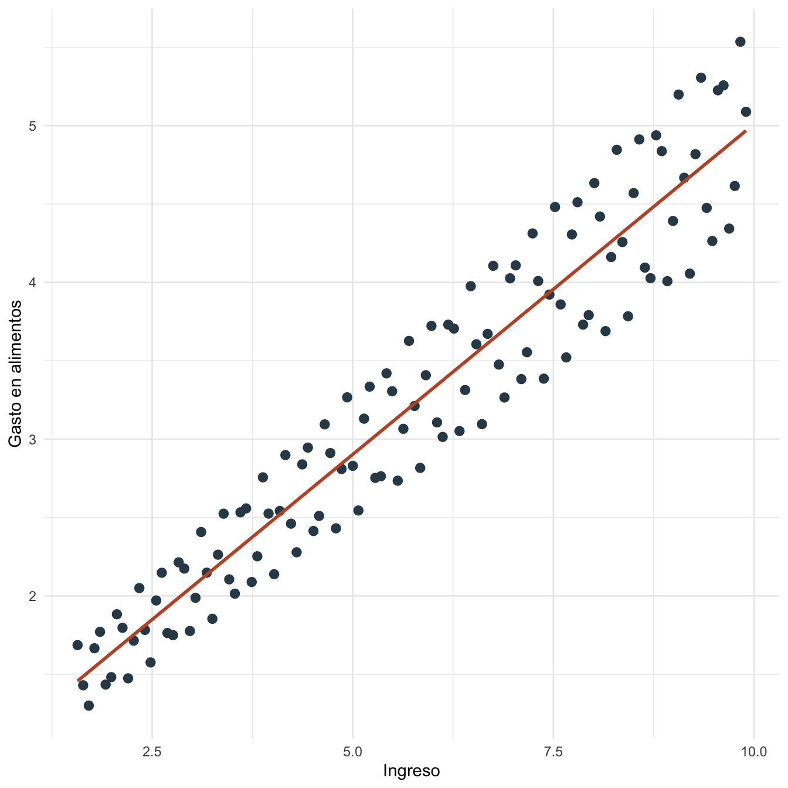
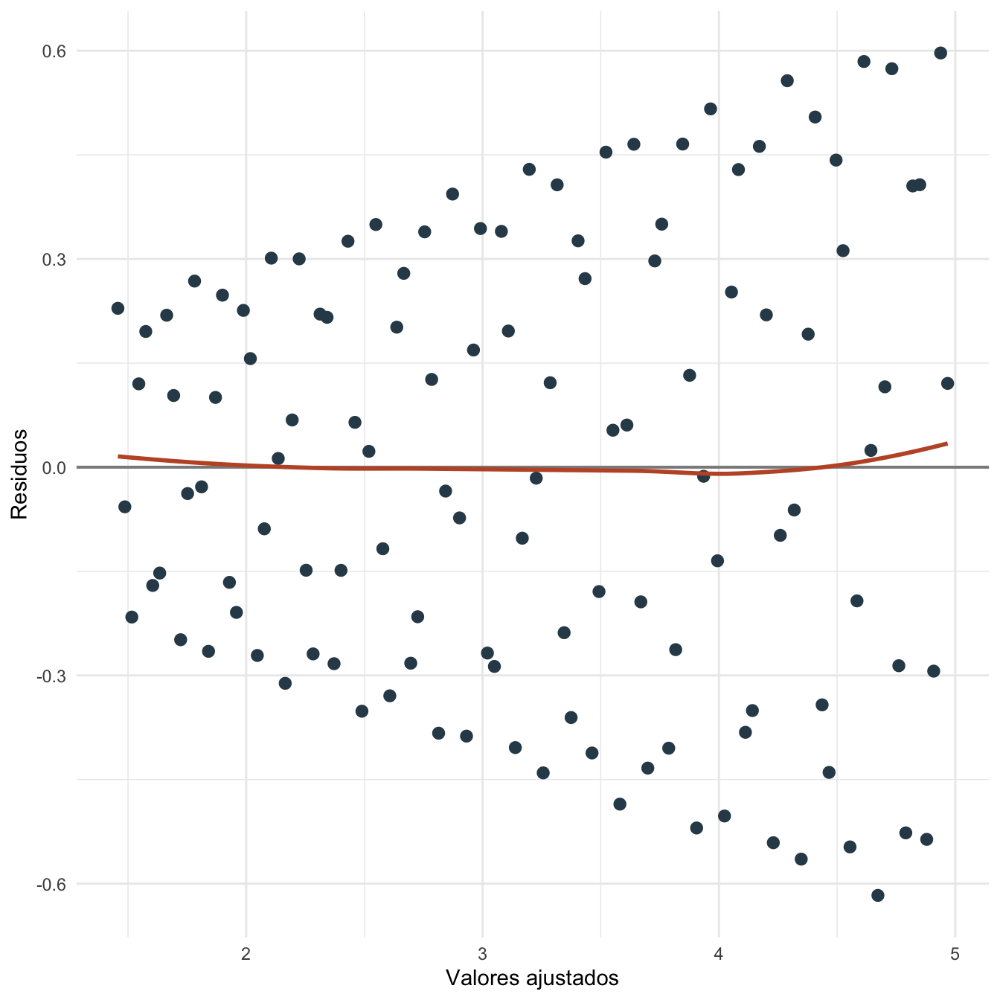

Capítulo 20 Heterocedasticidad: práctica
20.1 Objetivos de la práctica
Al finalizar esta práctica podrás:
- Estimar un modelo con heterocedasticidad generada de forma reproducible.
- Comparar errores estándar clásicos y robustos tipo HC1.
- Implementar pruebas auxiliares de Breusch-Pagan y White en R.
- Estimar una versión ponderada del modelo y comparar resultados.
- Reproducir el mismo flujo en Stata y Python/Google Colab.
20.2 Pregunta aplicada
Queremos estudiar la relación entre gasto en alimentos e ingreso del hogar. La pregunta aplicada es:
¿Qué cambia en la inferencia cuando la variabilidad del gasto aumenta con el ingreso?
Estimaremos:
\[ \text{gasto}_i=\beta_0+\beta_1\text{ingreso}_i+\epsilon_i. \]
20.3 Datos
Construimos una base reproducible donde la varianza del error crece con el ingreso.
| ingreso | gasto | escala |
|---|---|---|
| 1.57 | 1.686 | 0.228 |
| 1.64 | 1.430 | 0.232 |
| 1.71 | 1.300 | 0.236 |
| 1.78 | 1.666 | 0.239 |
| 1.85 | 1.771 | 0.242 |
| 1.92 | 1.434 | 0.246 |
| 1.99 | 1.482 | 0.250 |
| 2.06 | 1.883 | 0.253 |
| 2.13 | 1.796 | 0.256 |
| 2.20 | 1.474 | 0.260 |
| 2.27 | 1.714 | 0.264 |
| 2.34 | 2.050 | 0.267 |

Figura 20.1: Gasto en alimentos e ingreso en la base simulada
20.4 Estimación en R
Estimamos MCO y calculamos manualmente errores estándar robustos HC1.
| termino | estimacion | ee_clasico | ee_robusto_HC1 |
|---|---|---|---|
| (Intercept) | 0.7954 | 0.0755 | 0.0620 |
| ingreso | 0.4214 | 0.0121 | 0.0124 |
Calculamos pruebas auxiliares estilo Breusch-Pagan y White usando regresiones sobre \(\hat{\epsilon}_i^2\).
| prueba | estadistico_LM | grados_libertad | p_valor |
|---|---|---|---|
| Breusch-Pagan auxiliar | 34.3740 | 1 | 0 |
| White auxiliar | 34.6787 | 2 | 0 |
Estimamos también un modelo ponderado usando los pesos verdaderos de la simulación. En aplicaciones reales, estos pesos rara vez se conocen.
| modelo | beta_ingreso | error_estandar | t |
|---|---|---|---|
| MCO clásico | 0.4214 | 0.0121 | 34.7640 |
| MCO con EE HC1 | 0.4214 | 0.0124 | 34.0511 |
| WLS con pesos conocidos | 0.4198 | 0.0111 | 37.9812 |

Figura 20.2: Residuos frente a valores ajustados bajo heterocedasticidad
20.5 Interpretación
La pendiente estimada de ingreso es 0.421. Con errores clásicos, su error estándar es 0.012; con HC1, es 0.012.
El estadístico LM de Breusch-Pagan es 34.374 y su \(p\)-valor es 0.000. El estadístico auxiliar de White es 34.679 y su \(p\)-valor es 0.000.
En esta práctica conocemos la forma de la varianza porque la simulamos. En datos reales, WLS requiere justificar o estimar los pesos. Si no hay una forma clara de modelar \(\Omega\), reportar errores robustos suele ser una primera respuesta razonable.
20.6 Estimación en Stata
El mismo ejercicio puede reproducirse en Stata:
clear
set obs 120
gen i = _n
gen ingreso = 1.5 + 0.07 * i
gen escala = 0.15 + 0.05 * ingreso
gen ruido = escala * sin(1.7 * i)
gen gasto = 0.8 + 0.42 * ingreso + ruido
reg gasto ingreso
predict residuo, resid
predict ajustado, xb
reg gasto ingreso, robust
gen residuo2 = residuo^2
reg residuo2 ingreso
display "LM BP = " e(N) * e(r2)
gen ajustado2 = ajustado^2
reg residuo2 ajustado ajustado2
display "LM White = " e(N) * e(r2)
reg gasto ingreso [aw = 1/(escala^2)]
scatter residuo ajustado, yline(0)Los resultados esperados son los mismos coeficientes que Stata debe reproducir si usa la misma base y especificación:
| Término | Estimación aproximada | EE clásico aproximado | EE HC1 aproximado |
|---|---|---|---|
| Constante | 0.795 | 0.075 | 0.062 |
| Ingreso | 0.421 | 0.012 | 0.012 |
| \(R^2\) | 0.911 |
20.7 Estimación en Python y Google Colab
Para correr esta práctica en Google Colab, abre un cuaderno nuevo y ejecuta:
Luego reproduce la base y estima:
import numpy as np
import pandas as pd
import statsmodels.api as sm
from statsmodels.stats.diagnostic import het_breuschpagan, het_white
i = np.arange(1, 121)
ingreso = 1.5 + 0.07 * i
escala = 0.15 + 0.05 * ingreso
ruido = escala * np.sin(1.7 * i)
gasto = 0.8 + 0.42 * ingreso + ruido
datos = pd.DataFrame({"gasto": gasto, "ingreso": ingreso, "escala": escala})
X = sm.add_constant(datos["ingreso"])
ols = sm.OLS(datos["gasto"], X).fit()
rob = ols.get_robustcov_results(cov_type="HC1")
wls = sm.WLS(datos["gasto"], X, weights=1 / datos["escala"]**2).fit()
print(ols.summary())
print(rob.summary())
print(wls.summary())
print(het_breuschpagan(ols.resid, X))
print(het_white(ols.resid, X))Los resultados esperados son los mismos coeficientes que Python debe reproducir si usa la misma base y especificación:
| Término | Estimación aproximada | EE clásico aproximado | EE HC1 aproximado |
|---|---|---|---|
| Constante | 0.795 | 0.075 | 0.062 |
| Ingreso | 0.421 | 0.012 | 0.012 |
20.8 Comparación R, Stata y Python
R, Stata y Python estiman los mismos coeficientes de MCO si usan la misma base. Las diferencias prácticas aparecen en cómo se piden los errores robustos, las pruebas auxiliares y los pesos para WLS.
| Tarea | R | Stata | Python |
|---|---|---|---|
| MCO | lm(gasto ~ ingreso) |
reg gasto ingreso |
sm.OLS(y, X).fit() |
| Robustos HC1 | matriz manual o paquetes | reg, robust |
cov_type="HC1" |
| BP | regresión auxiliar de \(\hat{\epsilon}^2\) | hettest o auxiliar |
het_breuschpagan() |
| WLS | lm(..., weights=) |
reg [aw=] |
sm.WLS() |
20.9 Errores frecuentes en la práctica
- Concluir causalidad por corregir errores estándar. Los robustos corrigen inferencia bajo heterocedasticidad, no endogeneidad.
- Usar WLS sin justificar pesos. Los pesos deben venir de una estructura de varianza defendible.
- Ignorar gráficos. Las pruebas resumen patrones, pero el gráfico de residuos ayuda a ver la forma del problema.
- Comparar \(t\) clásicos y robustos como si fueran distintos coeficientes. En MCO con robustos, el coeficiente no cambia; cambia su error estándar.
20.10 Ejercicios computacionales
- Cambia la forma de
escalapara que la varianza crezca más rápido con ingreso. ¿Cómo cambian los errores robustos? - Estima el modelo sin errores robustos y con HC1. Compara los \(t\).
- Reemplaza los pesos verdaderos de WLS por pesos estimados desde una regresión auxiliar. ¿Qué cambia?
- Reproduce la práctica en Stata o Python y verifica que los coeficientes coincidan con R.
- Resuelve las partes B, C y E del Problem Set 3: Multicolinealidad y heterocedasticidad.